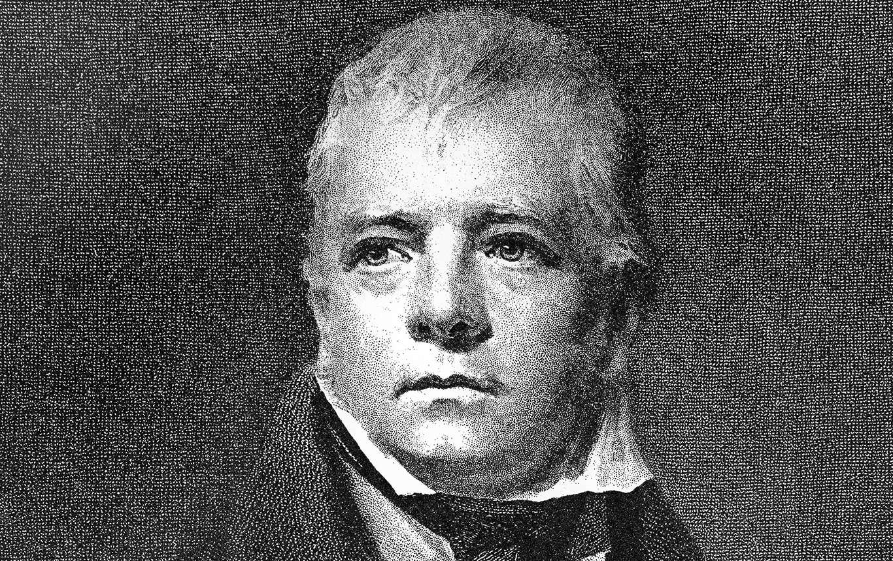

Frågan om det är bäst för människan att leva i en stark stat eller i en stark klan har diskuterats genom historien. Inte heller i dagens globaliserade verklighet är valet en självklarhet, skriver litteraturvetaren Johan Lundberg.

Skotsk nationalism har som bekant firat triumfer på sistone. I skotsknationalistiska kretsar ser man med nostalgi tillbaka på tiden före 1700-talet, då Skottland ännu inte blivit en del av Storbritannien. Paradoxalt nog var det dock inte förrän engelsmännen hade krossat det sista jakobitiska upproret 1745 som förutsättningar skapades för en skotsk nationell identitet.
Med slaget vid Culloden besegrades nämligen inte bara ledarna för de främsta högländska klanerna utan även klansystemet som sådant. Som den amerikanske juridikprofessorn Mark S Weiner beskriver i sin nyligen till svenska översatta studie av klanen som samhällelig organisationsform, ”Klanvälde. Från stamsamhälle till rättsstat” (Dualis förlag), är en nationell samhörighetskänsla på många sätt oförenlig med klansystemet.
Det är symtomatiskt att det var med klanväldets undergång som en mer systematisk romantisering av den skotska identiteten inleddes. Bara drygt ett decennium efter slaget vid Culloden gav James Macpherson ut ”Ossians sånger”. Macpherson påstod att han hade översatt ballader av den keltiske skalden Ossian, verksam på 200-talet (men i själva verket hade Macpherson skrivit ”nationaleposet” själv).
Före klansystemets undergång är det svårt att föreställa sig att en medlem, som James, av klanen Macpherson hade sett sig som något annat än just en medlem av klanen Macpherson, vars överhuvud Ewen för övrigt var en av ledarna vid upproret 1745. Ty det är en av de viktigaste egenskaperna i klansamhället: den absoluta lojaliteten till klanen. Utrymmet att agera efter eget gottfinnande är obefintligt. I utbyte mot obrottslig lojalitet erbjuder klanen trygghet och samhörighet. Medlemmarna hålls samman av månghundraåriga släktband på ett sätt som garanterar att klanen ställer upp för en när så behövs.
I klankulturer är klanen kollektivt ansvarig för vad varje medlem gör. Klanens status är baserad på att varje enskild person ser sig som upprätthållare av klanens heder. Och just det faktum att varje persons värde i klanen är knutet till varje annan persons agerande, är ett viktigt skäl till att klan är ett så framgångsrikt sätt för att organisera samhällen. I klansamhällen garanteras nämligen ordningen genom klanens själva struktur snarare än genom en centralmakt.
Weiner liknar klanen vid ett försäkringsbolag som man föds in i men inte kan lämna. Att lämna klanen innebär att man inte har några juridiska, ekonomiska eller medicinska skyddsnät, men också att man frigörs från det historiska band som konstituerar ens identitet. Det band bakåt i tiden som var och en i klanen kan redogöra för när de får frågan om vem de är, ett radband av förfäder som går tillbaka till klangrundaren.
Men är det då inte åtråvärt att göra som man själv känner? Att gå sin egen väg utan att ta hänsyn till ett regelverk som legitimeras av devisen att ”så har vi alltid gjort” och där det värsta man kan göra är att dra skam över släkten?
I Henrik Ibsens drama ”Gengångare” (1881) möter vi prototypen till dagens dysfunktionella kärnfamilj. Fru Alfving har genom påverkan av ortens trångsynte pastor övertalats att stanna kvar i ett djupt olyckligt äktenskap. I slutet av dramat känner hon sig omgiven av gengångare: de traditionella normer som styrt pastorns agerande. Pastorns moral har, visar det sig, inget med religion att göra. I stället är han rädd för att stöta sig med de hävdvunna värderingarna hos traktens småborgerskap, där en ny tids syn på äktenskap och sexualitet uppfattas som hotfullt normupplösande.
Men att Ibsens publik kunde enas om att fru Alfving borde ha följt Noras exempel i ”Ett dockhem” (1879) och lämnat sin make för att, som Nora säger, ”försöka bli människa”, berodde på att någonting tillkommit som inte fanns i de skotska högländerna före 1745: en stat. Utan stat hade Nora inte haft möjlighet att välja ett annat liv: ”att inte låta mig nöjas med vad de flesta säger och vad som står i böcker. Jag måste själv tänka ut och själv ta reda på saker och ting.”
Weiner argumenterar övertygande för att staten är själva garanten för individens autonomi. Han poängterar att libertarianer har fel när de ser en försvagad stat som nödvändig för individens frihet. I själva verket är det tvärtom. Med en svag stat tenderar människan att organisera sig runt det som genom historien garanterat trygghet, sammanhang och säkerhet: klanen.
Medan staten beskyddar sina invånare, beskyddar klanmedlemmarna sina kusiner. Om staten ser människorna som autonoma individer, betraktar klanen människorna som delar av en kollektiv organism, där ansvar är gemensamt fördelat. I en modern rättsstat är den som begår ett brott mot en annan människa individuellt ansvarig för brottet och ofta även ersättningsskyldig. Brottslingens släktingar anses inte ha något med saken att göra. I ett samhälle organiserat utifrån klan kan man nå förlikning för ett mord begånget på en medlem i en annan klan genom att låta den mördades bror gifta sig med mördarens syster. Därmed anses den mördades släkt ha fått en skälig kompensation för förlusten. Den drabbade klanen har sällan något att vinna på att en brottsling från en annan klan straffas. Huvudsaken är att balans upprättas mellan klanerna.
Den moderna staten vilar på principen om likhet inför lagen och på idén att ett generellt välfärdssystem erbjuder trygghet och ökade möjligheter för självförverkligande och autonomi. Autonomin är i sin tur nödvändig för att driva samhället framåt, genom att forskning och utbildning sker på värdeneutral grund, samt genom att statens principer om yttrandefrihet och åsiktsfrihet garanterar att varje ståndpunkt och tankekomplex kan utsättas för kritisk granskning.
Problemet i dag är att vi tenderar att – inte minst i Sverige – ta den moderna staten för given och inte beakta att det klanbaserade samhället inte bara är diametralt annorlunda utan också är ett på många sätt mer självklart sätt att organisera mänskliga gemenskaper på (vilket är orsaken till att libyska eller arabiska klaner är organiserade på samma sätt som skotska för drygt 250 år sedan).
Så sent som under 1800-talet var relationen mellan stat och klan ett tema som fortfarande gestaltades i skönlitteraturen, inte sällan på ett sätt som ter sig aktuellt i dag med tanke på de utmaningar som en alltmer globaliserad värld står inför.
Hos den amerikanske författaren Henry James aktualiseras klanmentaliteten i hans tidiga roman ”The american” (1877) samt i den mindre kända kortromanen”The reverberator” (1888). I den förra kringskärs en kvinnas frihet som en konsekvens av hederskultur. I den senare får en man på motsvarande sätt inte gifta sig med den han älskar (vilket han inte accepterar och därför bryter med klanen). I bägge fallen återfinns klan- och hederskulturen i fransk aristokrati.
Den mest spektakulära gestaltningen av klankulturer torde annars vara Walter Scotts debutroman som skildrar just det skotska upproret 1745. ”Waverley” kom förra året ut i en tjusig jubileumsupplaga (Edinburgh University Press) med anledning av dess 200-årsdag. Romanen skildrar hur den unge engelsmannen Edward Waverley dras längre och längre in i den högländska klankulturen, vilket tillåter Scott att frossa i storslagna tablåer över slottsmiddagar med hovnarrar, excentriska klanledare och gaeliska barder. Waverley blir under sin vistelse i Högländerna förälskad i två unga kvinnor, först i Flora, sedan i Rose. De representerar valet mellan klan och stat.
Vid ett tillfälle har Edward på oklara grunder blivit avskedad från den engelska armén, hans far har under förnedrande former fått lämna sina regeringsuppdrag och hans skotske välgörare tvingats fly från sitt slott. Trots dessa oförätter är Edward skeptisk till att ansluta sig till höglandsklanernas krig mot ett England där ”allt avgörs enligt en lag som är lika för alla och som värnar alla oskyldiga”. Slutligen väljer han vid detta tillfälle att ta parti för det Storbritannien som ”upprätthållit medborgarnas fri- och rättigheter”. Scenen är signifikativ. Den vittnar om förmåga att göra en åtskillnad mellan ett system som inte fungerar fulländat – och vars brister i detta fall får katastrofala följder för hans familj – men som ändå vilar på en idé om människors lika värde och ett system som inte gör det.
Det som gör Scotts roman aktuell har inte minst att göra med att många människor i dagens globaliserade värld ställs inför samma val som Edward Waverley. I Sverige gäller det, som framgår av Per Brinkemos intressanta bok ”Mellan klan och stat. Somalier i Sverige” (Timbro, 2014), till exempel flyktingar från Somalia, vilkas klanbakgrund vanligtvis helt negligeras av svenska myndigheter.
Ställda mot ett klanbaserat samhälle är den moderna statens fördelar dock långt ifrån självklara. Det må vara ett val mellan å ena sidan frihet och autonomi och å andra sidan obrottslig lojalitet och minimala möjligheter till självförverkligande. Men det är också ett val mellan ensamhet och samhörighet, mellan brist på sammanhang och historisk kontinuitet, mellan att endast tillmätas värde på basis av prestation och att ha ett självklart värde som del av en grupp.
Men framför allt handlar det om att den frihet som staten tillhandahåller måste kunna användas till något konstruktivt. Erbjuds man inte den möjligheten är det svårt att förstå varför man skulle välja stat framför en organisationsform som genom historien har uppvisat en exceptionell konkurrenskraft och överlevnadsförmåga. För många i dag är det valet ännu svårare än vad det var för den engelske aristokraten Edward Waverley i Skottland.
Johan Lundberg
är författare och docent i litteraturvetenskap vid Stockholms universitet